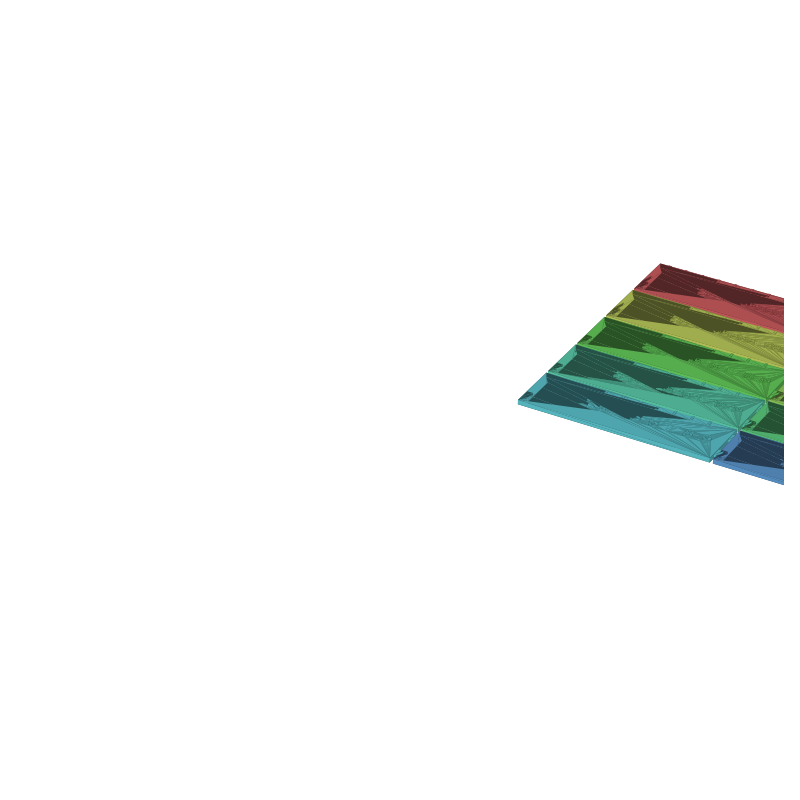

Classroom number line STL, 0-99 in ten peg-joined tiles
Printed number lines usually come as one long strip, and a long strip is exactly wrong for a desk: it curls off the edge, it stores badly, and a student working on 34 has to hunt for it between 0 and 99. This one breaks the line into ten decade tiles, 0-9 through 90-99, each a flat 122 × 34 mm plate. Chain them for the full line, pop off the decade you are on, or snake two rows around a desk corner.
Every unit carries a tick along the top edge and a raised numeral under it, on an 11 mm pitch. Ticks on multiples of 5 stand taller than the rest, so counting by fives and tens reads straight off the surface with no color and no labels. Because the digits and ticks are raised 0.6 mm above the tile rather than printed in a second color, the whole set works on a single-extruder printer.
The tiles join with two rectangular tabs per tile into open-bottom notches, with 0.2 mm of clearance per side. The fit is loose on purpose: the tabs align flat tiles on a table, they do not lock, so re-ordering decades takes a second and nothing snaps.
This page carries the measured spec sheet: dimensions taken from the mesh, the tab-by-tab clearance check, and preview renders, so you can check the sizes before you slice.

The renders tint each decade tile a different hue so the tile boundaries show; the STL is one material and prints in one color. Raised digits carry the numbers, so a single spool is enough.
Spec sheet, measured from the mesh
| Spec | Value |
|---|---|
| As exported | Ten separate tile bodies on a 249.5 × 178 mm plate footprint (2 × 5 grid, 246 × 180 mm nominal); no assembly beyond tabbing tiles together |
| Tiles | 10 decade tiles, 0-9 through 90-99; each 122 × 34 × 3.0 mm base, 125.5 × 34.0 × 3.6 mm with tab and relief, about 12.6 cm³ each |
| Counting surface | One tick and one raised numeral per unit, 10 units per tile on an 11.0 mm pitch; numerals 7.5 mm tall bold, raised 0.6 mm above the tile |
| Ticks | Minor 3.5 × 1.3 mm, major 5.5 × 1.8 mm on every multiple of 5; taller ticks make fives and tens visible with no color |
| Tab joints | Two rectangular tenons per tile, 6.0 wide × 3.5 protruding × 2.0 mm thick (z 0.5-2.5), into open-bottom notches on the next tile |
| Tab clearances | Measured from the mesh: 0.2 mm per side on width (6.0 vs 6.4), 0.1 mm depth slack (3.5 vs 3.6), 0.2 mm above the tab (notch z 0-2.7 vs tenon top 2.5) |
| Relief | Numerals and ticks sink 0.2 mm into the 3.0 mm base and stand 0.6 mm proud; top of relief at 3.6 mm |
| Volume | 126.0 cm³ solid total for the sheet, about 156 g of PLA at typical infill |
| Print time | About 4-6 hours, PLA, 0.4 nozzle, 0.2 mm layers; a geometry estimate, not a measured print |
| Mesh check | All 10 tiles watertight, winding consistent, euler 2 each (combined 20), 48,364 faces; the 3MF carries 10 named tile objects (trimesh 5.1.0, 2026-09-10) |
| Files | STL (2.3 MB) and 3MF (563 KB) plus the parametric generator script |
| License | CC-BY 4.0 on the MakerWorld upload; royalty free, no AI training, direct from us |
How the tab joints work
Each tile carries two tenons on its right edge, at 8 mm and 26 mm from the front, and takes the two tenons of its left neighbor into open-bottom notches. The notch is 6.4 mm wide against a 6.0 mm tab, 3.6 mm deep against a 3.5 mm tab, and reaches 2.7 mm up the tile wall against a tab top at 2.5 mm. Slide the tab in flat and the tile seats with its bottom on the plate and its top level with its neighbor.
The clearances came off the exported mesh, not the parameter sheet: the notch width, depth and height were checked against the tenon geometry by ray tests through the printed solid. The 0.2 mm per side is the number that decides how the joint feels; at 0.2 a tab drops in with light finger pressure and the line stays straight on a flat table.
The notches are open at the bottom, so the joint prints as plain vertical walls with no overhang, and the tabs sit low on the tile where the walls are thick. Every surface on every tile is either flat on the plate or vertical, so nothing in the set needs supports.
Print notes
Print the sheet as-is: the ten tiles export already laid out in a 2 × 5 grid that fits a 256 mm plate, with a 2 mm gap between tiles. Your slicer will show them as 10 objects; leave them as one plate and print flat. No supports, no brim beyond what your plate adhesion needs.
I have not test-printed this one yet. If you print it, post a make and tell me how the tab fit came out; the clearances are the tuning knobs. PEG_CLR (0.2 mm) widens or tightens the side fit, and the notch height in the generator sets how much vertical play the joint has.
The generator (gen_numberline21.py) takes decade start and count, unit pitch, tile size, numeral height, tick sizes, and the tab clearances as parameters. Want 0-149, negative numbers on the left, or a 0-19 line for younger kids? Change the decade count and reprint the tiles that changed.
Honest limits
The 4-6 hour figure is a geometry estimate from the mesh, not a timed print, and the tab clearances are mesh-measured but untested on a printer. A first layer 0.1 mm thick will not hurt this design the way it hurts a print-in-place one, because nothing here is captured at print time; the risk is tab tightness, and the fix is PEG_CLR at 0.25 and a reprint of the two tiles that bind.
The tabs align, they do not lock. Pick the line up by one end and the tiles stay chained; knock a corner and a tile can slide out of line. That is the trade for a line that comes apart by decade instead of needing screws or glue.
Eleven millimeters of pitch is desk distance, not wall distance. Across a full 0-99 line the numerals read at about an arm's length; across a classroom, print the tiles bigger with the generator rather than expecting this scale to project.
Where to get the files
The number line is staged on our MakerWorld account and goes public on our profile once it is submitted and clears review.
The classroom side, including the print-in-place abacus these tiles pair with, is in 3D printable education models. More printed organizers and tools, with a status table for the pool: 3D printed desk organizers and printable tools.
FAQ
Why split the line into tiles instead of printing one strip?
Storage and focus. A 1.1 m strip does not fit a desk drawer or a busy table, and a student counting to 34 on it passes nine other decades on the way. With tiles, the working decade is one object on the desk, the rest stack in a drawer, and re-ordering or snaking the line takes seconds.
How do the tiles stay aligned if the tabs are loose?
The tiles are flat and the table is flat; the tabs only need to stop the tiles sliding apart sideways. Two tabs per tile, 8 mm and 26 mm from the front, kill rotation, and the 0.2 mm side clearance means seating takes finger pressure, not force. If you want a tighter line for wall mounting, drop PEG_CLR to 0.1 in the generator.
Can I print other ranges than 0-99?
Yes, that is what the generator is for. Decade start and count are the first two parameters: 0-19 for kindergarten, 100-199 to extend place value, or a single 90-99 replacement tile for the one that got lost. Each decade is an independent tile, so a partial reprint is a few minutes of slicing.